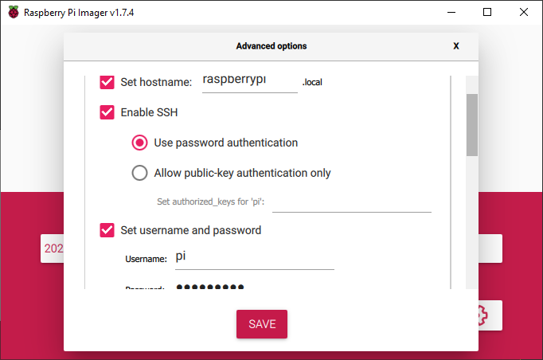
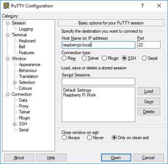
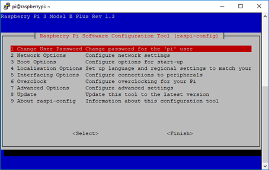
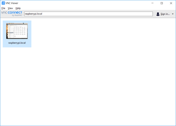
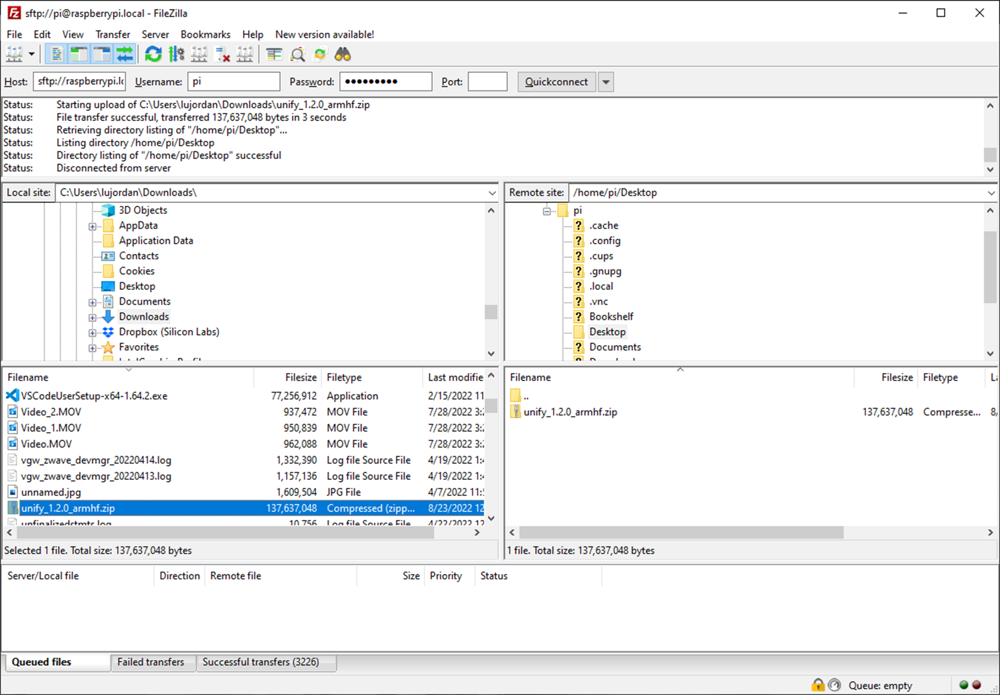

Setting up Raspberry Pi for Unify
Introduction
Here we explain how to set up and running quickly to test out Unify on the Raspberry Pi reference platform. Depending on the protocol(s) used this setup may vary so there are several sections that go into more detail for each protocol controller. This page contains the steps to install Unify on the Raspberry Pi regardless of the protocol(s) used.
Prerequisites
Raspberry Pi 4
SD card for Raspberry Pi
SD card reader
IP router with built-in DHCP
Software tools
Set up Raspberry Pi
Prepare the SD card
Insert SD card into SD reader
Use Raspberry Pi Imager to load the image to the SD card

Click on settings and set the following
Enable SSH
Set username and password
Set hostname

Connect to Raspberry Pi
Power up the router. Connect your PC to the router using ethernet or WiFi. Connect the Raspberry Pi to the router using ethernet.
Open a terminal with ssh (such as Putty), and type in either raspberrypi.local or the IP address of the Raspberry Pi in the host name field. After clicking open, click yes to accept the security key, and the default user name is pi and password is raspberry (unless any of this was changed in the previous step when loading the OS image). 
Now we can enable the VNC server. Run raspi-config by typing the command “sudo raspi-config” in the ssh command line. Select “Interfacing Options”, “VNC”, and “yes” to enable. This may also be a good time to increase the screen resolution. Select “Display Options”, “resolution”, and select a suitable resolution. Finally select “Finish” and “yes” to reboot.

Wait for the Raspberry Pi to reboot and then open VNC Viewer. Connect to raspberrypi.local, or use the IP address. Use the same username and password as previously. Upon success you will see the Raspberry Pi desktop. 
Copy Unify to Raspberry Pi
Download the Unify release file from https://github.com/SiliconLabs/UnifySDK/releases
Open Filezilla and connect to sftp://raspberrypi.local entering the same username and password again 
On the left side (local) locate the unify zip file, and on the right side (remote) choose a location to copy to
Right click on the zip file and “Upload” to transfer the file
Go to VNC Viewer and open a terminal on the Raspberry Pi
Use the command “unzip” to extract the zip file contents
Install Unify
Enter the directory of the extracted files and install Unify
Remove the libunify-dev file from the directory then run:
pi@raspberrypi:~ $ cd unify_*
pi@raspberrypi:~ $ sudo apt install mosquitto
pi@raspberrypi:~ $ sudo apt install ./*deb
To finish installing and running Unify choose a protocol to continue with and following the remaining steps